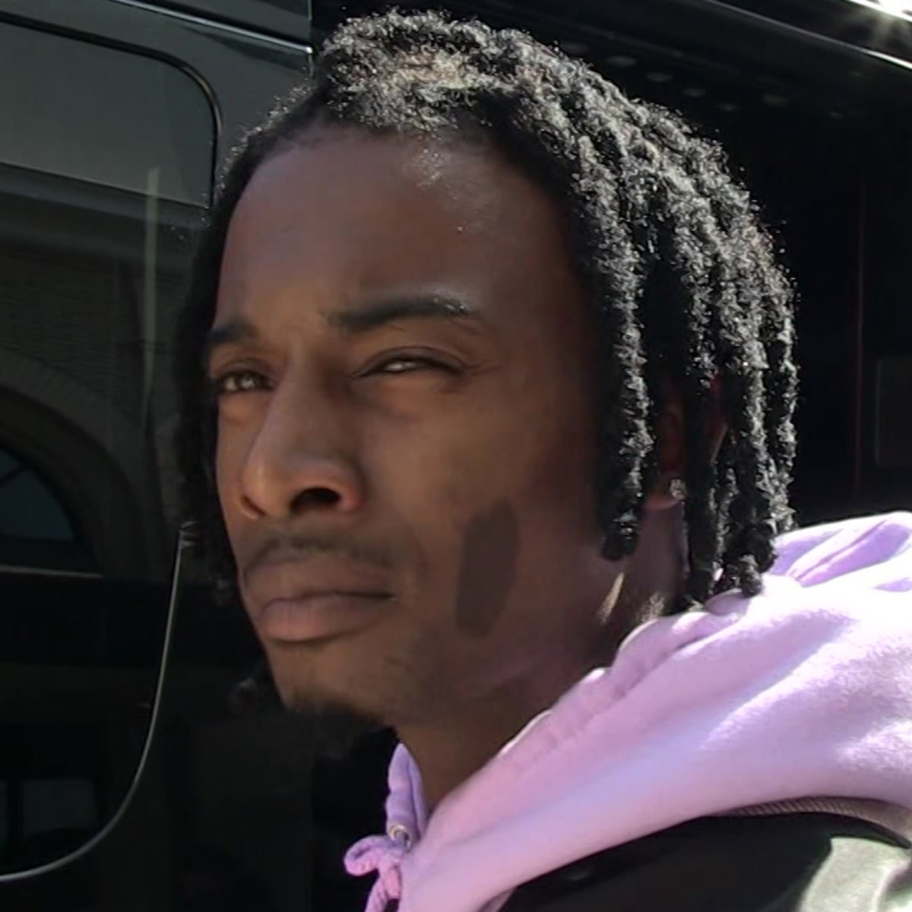

Welcome to Reisepasse, a blog and online library run by Yoni and Yousef.
We have a primary goal: To deliver important literary and philosophical texts in an accessible format, alongside new book covers, and introductions written by avid fans of said works.
We operate as a cultural blog as well, sharing our opinions, hosting guest writers, and promoting independent artists of all fields.
For accessibility issues, questions, guest writing, etc. feel free to contact us at riseuhpass@gmail.com. Thank you.
Today, we'll be dumping a stockpile of texts that will be mere redirects to their Project Gutenberg HTML pages. Book covers and ePubs will be added throughout the week, but for now, we've created a single placeholder image until we the privledge to tend to aesthetics.
It's unfortunate our world is radically different than that of the Public Domain.
We hope that texts like The Vindication of the Rights of Woman, The Souls of Black Folk, or even The Complete Works of Shakespeare
can posit universal themes and help us gain rich context into various histories, and can continue to do so forever.
Unfortunately, there are some explicit horrors unique to our history that must be addressed, and the Public Domain might
not be the best option for gaining a critical outlook on them. We will continue to release free texts in the hopes of bringing
out the Public Domain's full contemporary potential, but for now, here are some texts written after 1924, written for our world.
Links to each are provided.
by Yousef Fatehpour
Inspired by Madame Benoît
Read by Annette, Madame Benoît's granddaughter
This story is to soon be accompanied by a film, hopefully.
I.
'A’ is the first letter of the Latin Alphabet. It has derived, we think, from the 7th century. In its traversal it's proved skeletal, its framework open to manipulation, to fit new alphabets. Å, is how the Nordic peoples fit the frame for their phonetics. History had it so that the Fins adopted Å from the Swedes, even if their tongue had no use for it. This issue has found a space in the nexus of Nord on Nord drama. Wars have been waged over women, drama, over Å.
‘A’ is the first letter of the Latin Alphabet. Its founder, far from a single person. Its general history, generally mysterious. There is one man, however, whose relationship with ‘A’ exists, right now, as one of the more intriguing and well documented points of the letter’s history. Averroes, the Aristotelian, the Astronomer, physician of the Almohad. Averroes. Derived aside the native Arabic.
A bit past the middle point of his life, enough so that he’d known it was indeed past the middle point of his life, Averroes felt he’d achieved everything. Those from the school of Aristotle cannot, however, claim this privilege a ‘crisis’. Instead, they engage with the far more feared concept of ‘boredom’. Averroes was a bored man.
He was of that certain rank of men whose talents were so diverse--that rank that, for centuries, eclipsed discourse regarding the opportunities women had to reach those same heights. Men of these ranks were natural talents, I’ve been told. So masterfully he established dominion over Cartography, over the Psychological arts, Law, Linguistics, Literature, and in the spirit of his blood, Mathematics, of course. No. Men of these ranks, I’ve truly been told, exist in that space separate from the material world. Those same traumas the citizens of Marrakesh felt, for a man like Averroes, were tools. Bits, rather, to advance thought, to chase truth.
‘A’ is the first letter of the Latin Alphabet, and in its traversal it's proved skeletal, its framework open to manipulation, to fit new worlds. Ⓐ befit the anarchists. @ manipulated the first letter of our communicative toolset to standardize the final frontier of communication itself. ‘A’ is the first letter of the Latin Alphabet, and it was the thesis of Averroes’ 48th year of life.
The consequence of breathing the systematic life of talent is that one’s education grows in relation to problem solving. Averroes felt as if the problems of the world had been solved, yet he was not ecstatic to tackle the problem of his own boredom, because he himself knew the problems of the world would carry on. That it was ridiculous to think that the problems of the world had actually been solved, but famine was not his problem to solve, for famine was the outcome of a whole slew of political and material mish-mashing that he simply was not interested in. Problems of this sort are vehicles to propound grand notions of human suffering forward, to advance great theories of philosophy. They were bits. They were tools and bits to play with, and he was a bored man, so these toys were to go back to wherever he’d thrown them.
‘A’ is the first letter of the Latin Alphabet. Perhaps its premiere spot in the building blocks of communication proved it inherently the letter Averroes was to obsess over for his 48th year of his life. Yet the story goes that one night, sifting through early rudimentary Anglo-Saxon translations of Aristotle, he’d become fascinated with the various ways the Europeans would write the letter. One might wonder why he was not just as fascinated by the ‘Aleph’ of his native tongue, but I do not know why that is.
Averroes had made it a mission to create the perfect ‘A’. What comes next is an argumentative point great men seem to have, I hope not to offend in bringing forth the notion that around this time, there were indeed two cases in the language Averroes hoped to perfect, the upper and lower. He was, for some reason, more interested in the lower.
‘a’ is the first letter of the Latin Alphabet. The Renaissance, the one you are thinking of, not the other, laid bare the field of design to the logical world. It was here where great men reappeared, to claim images in their domain, by applying a whole number of mathematical ratios. It was here that culture’s fascination with implanting the Fibonacci spiral on everything began. The Swiss of our ages have continued this tradition in their modern typesetting of literature, yet perhaps their debt lies a few centuries prior to what they’ve thought, for it was Averroes who, in the pursuit of the perfect ‘a’, created the grid. It was in this 7x7 plane that his work was to live. That overlays of various font-types he saw spreading throughout Europe would breath in an aesthetic dialectic, would provide the adoration and disgust necessary to create the perfect ‘a’. ‘a’ is the first letter of the alphabet, it was never perfected.
II.
The next part of this story moves quickly, listen. By the second week of his endeavor, Averroes felt as if he’d known what was going wrong. It seemed as if this entire pursuit was defined not by the same noble touchings with truth he’d felt his previous accomplishments had, but by something far more frivolous. There was that gut, that voice—that I am almost sure has existed beyond time—that kept ringing in his head. That voice claimed superficiality. It was here that he proceeded to yell. It’s said that noble men have no marble in their home. His wood-framed study soaked in all that he threw.
He yelled again. He’d found that there must be noise to occupy his space as he perfected ‘a’, silence is the precursor to the gut. To the technical questions. Silence would give him a second to doubt the curvature of a’s right-most arm to the millimeter. It might force its subject to wonder whether the gaping nothing in the central loop of ‘a’ is a smidge too large. These questions of mere aesthetics were of no use to Averroes, he sought to perfect a’s form, not a’s frame.
And so he yelled again, and he’d found he fell under the same spell, that it was the technicalities of this ahistorical mission to perfect ‘a’ that pervaded his mind. He’d realized he needed noise, just not his own voice.
‘A’ is the first letter of the Latin Alphabet. Adrian, was his name.
Averroes had decided to abstain from his endeavor for a single day. This same day, a young Majorcan, sun-tanned with shorts at the capital, met Averroes at the steps outside his study. With no hesitation, the boy named Adrian pronounced his mission. Although, he’d ran through his experience and worth before his own name. He’d set out to seek apprenticeship. To fall in line with that great string of students who carve their own path. On the trip to the mainland he’d even considered the possibility of his apprenticeship itself becoming a vital part of his story. He’d spend days dreaming of imaginary fights, endless discourse. Days in of studying under the great polymath, nights out of affirming a wholly new life apart from his studies. Of course, like many daydreamers, reality proved far less fantastical, but Averroes did take the young man under his study. He’d very rarely come in contact with his kind, they proved charming. And, of course, he was bored.
III.
Months went on and nothing of significance occurred. Adrian was well mannered, and not significant. This is a rather detrimental combination for a bored man. About two and a half months into his apprenticeship, Adrian walked into Averroes’ study, at the exact same minute he always does, with the exact same texts clutched to his rib, eager as the first day. But, and it must be repeated, Averroes was a bored man, and great men, I’ve been told, of course, are the true knowers of the world. To cultivate a society where men like this are not given free reign to affirm life and continue their campaign towards truth—To cultivate such a society is indicative of a fundamental instability, and bleak days ahead. I know no better, but perhaps it’s significant that Averroes’ interest in the alphabet was slightly piqued once more, this time in the penultimate letter, ‘x’.
Regardless, Adrian had been on time once again, and Averroes was a bored man, so as Adrian plopped his books on the table—They were comfortable with each other now—Averroes asked a genuine question.
“Adrian, how was your day, yesterday?”
Adrian had never been asked about his day. Still, it turns out that the lack of hesitation in his answers was not out of some adolescent affirming, a prodigal immediacy, but simply the result of innocence, of stupidity, even.
“I went to the underground brothels, close to Djemaa el-Fnaa. Do you know Djemaa el-Fnaa?”
Of course he knew the main square of the capital of the republic, of course he did. That question was so stupid that it almost seemed strategic. Some sort of flash-bang thrown last second to disorient him from the fact that this thirteen year old boy had visited a brothel--brothels! Plural.
“Do tell more.”
Averroes was stunned, but interested. He’d not felt interest since ‘a’. Yet, thinking back, as Adrian driveled, he’d realized this was a new sort of interest, a deep interest in the frivolous, pulp shlock that never dared reach his world. In fact, this feeling, this profoundly new feeling, was so intriguing he actually stopped thinking to listen to Adrian. Adrian had finished, though. Averroes asked him to repeat himself.
Adrian possessed the tongue of the corroborator. Averroes has learnt of every single detail of the Marrakesh Underworld by asking a mere two follow-up questions. He thought many times through Adrian’s portrait of the lower-class, how malleable he was for State use. Thrown into whichever investigation, he’d navigate the tunnels of the Underworld and come back to the authorities with a tome. In this strange way, Averroes felt a sense of ease knowing Adrian was his, for someone of his kind falls victim to those sorts of manipulation. He did not, once, however, feel any discomfort in the fact that Adrian was a homeless thirteen year old child meddling with criminals and other impressionable youths, peddling opium and sojourning in brothels.
Adrian was happy to speak to someone who was listening.
When Adrian’s tale grew cyclical, Averroes sought to zero their relationship back to where it started. It was time to learn. Today’s lesson lied in the Botanical Sciences. He usually liked to introduce Adrian to their lessons through a general encyclopedia. He pulled the correct volume, drew back to his study, and did something he usually vowed to never do. Life was very, very boring for the great polymath, and he’d found the frivolous interesting enough so far, he decided to dabble, and pull from the lowest level of academia. He wished to do what teachers of the dunes did, to relate some logistical concept to the greater, non-tangible truths of life, through a whole array of banal metaphors and adages. Usually, this space was occupied by Philosophy, and this method employed on children, children even younger than Adrian.
‘Adrian,’ he said, as he pointed to the encyclopedia, ‘this text, to me, and many like it, proves stronger than the greatest dynasty’s entire arsenal. Adrian, tell me. In what ways, is a text like this, weaponry?’
He’d expected Adrian to ponder, for he’d not hesitated once in conversation since they’d met. He’d expected the question to potentially sit for days. He’d expected Adrian to think, to really think.
‘Well, one could use the book to beat a man to death, sir.’
Averroes froze.
‘What?’
‘I said one could use the text to beat a man to death, sir. It’s quite thick. How the text is greater than an entire arsenal, I do not know. Perhaps if an entire army has, say, one-thousand books—of that thickness, of course—well, why yes. I could imagine one-thousand books of that thickness proving more dangerous than an entire arsenal, sir.’
Silence.
Averroes, up until this point in life, was essentially the encyclopedia incarnate. It’s interesting to note that when Adrian told him stories of the Marrakesh Underworld, he’d known everything, Adrian had merely filled gaps and connected stories and characters Averroes already knew of, because Averroes knew everything. So when Adrian told him of Rafael Alami, the owner of the southernmost brothel in the city, he’d pretended he’d heard of the Alami family for the first time, yet he knew of their crimes, and he knew of their persecution. For it was Ali, Rafael’s brother, who mere years ago was hung by the State in the city quarters alongside six others for gross indecency with other men. Averroes was open-source, continually engaging with his city from afar, collecting all the information he needed towards the grand pursuit of truth. For him, these moments of persecution were the centerpieces for greater arguments of justice. The material pain of individual bodies dying was just that, material. Every single day there seemed to be terror in Marrakesh.
There were the sailors who left their families to die at sea that fueled the pursuit of mapping the world.
There were those children whose ribs tore through their chest who fueled egalitarian discourse, not even the pursuit of ending famine. Even at night, the city was draped in horror. The blinding stars that overlooked the city were in a gigayears-long race to tear apart and turn inwards, to become the violent nothing, and this process would bring light to the city, and it would light Averroes’ play-set of material horror. Of abandonment, famine, and persecution, for he needed these in the pursuit of truth. And each night, he’d soak the city dry, and retain every last bit, every last politics and banality he could, for these were the building blocks of his life’s work, and he’d never once realized there was honor in those bits. He’d never once held the bits to the standard they so desperately begged for through their very being, and the only time he devoted his life to a bit, to ‘a’, he used the material foundation of our discourse, of our communication, and of our pain, to fuel the meaningless dialogue of aesthetics and ‘true form’ in his own head.
Averroes was the encylopedia incarnate, and he’d for his entire life, felt that was not his strongest side, but his most violent. To have that much information, that much knowledge—that is what makes the text stronger than the greatest dynasty’s arsenal, especially in the hands of a man like Averroes. But now he walked slowly back to his bookshelf, and placed the encyclopedia back in its slot. He turned to Adrian, and asked him to show him around, to show him his people. He wanted to engage with the banalities of the world, to genuinely experience the bits.
The formalities of who would recognize him, or of the consequences of being caught by the authorities did not worry Averroes, obviously. Instead, Averroes, encyclopedia incarnate, flung himself with the material, blunt force Adrian envisioned the text to hold, and violently fell slave to culture. In this life, there were entire new worlds to discover, and to immerse oneself in, instead of document. In fact, Averroes remembered nothing of these nights, hazy details that were to be pieced together by chance, perhaps by a peasant who’d recognized him the day before. He’d decline softly in the company of aristocrats and contemporaries, and go about his way.
‘A’ is the first letter of the Latin Alphabet. Adrian and Averroes explored Marrakesh for one week, until word spread that a young prodigal mathematician from England had released a treatise opposed to many of the theorems Averroes had laid out and built his entire career on, both in the mathematical and philosophical realm. That spark he once achingly missed rang bright in him for the first time in a year, and on the first day of his 49th year, he left Adrian to the world and returned to his study.
“I sit with Shakespeare, and he winces not. Across the color line I move arm and arm with Balzac and Dumas, where smiling men and welcoming women glide in gilded halls.
From out of the caves of evening that swing between the strong-limbed Earth and the tracery of stars,
I summon Aristotle and Aurelius and what soul I will, and they come all graciously with no scorn nor
condescension. So, wed with Truth, I dwell above the veil. Is this the life you grudge us,
O knightly America? Is this the life you long to change into the dull red hideousness of Georgia?
Are you so afraid lest peering from this high Pisgah, between Philistine and Amalekite, we sight the Promised Land?”
W.E.B. Du Bois
The Souls of Black Folk, alongside 47 other classics, are now all available on Reisepasse.
by Yoni Yardeni
History goes to show that whatever was cool six minutes ago is automatically wack now. But, at the same time, things like “The Last Dance” go to show how easily society can be reminded of how cool something used to be as they go on to bask in it for what could be days or weeks at a time.
As divisive as it may have been among old heads and e-boys, my question lies in the latter’s change of perception. What are people complaining about now? Fans of Playboi Carti have revered the baby voice for an entire year if not more, only for the ATL-bred scatter to hop on a track with one of the biggest artists in the world.
For fuck’s sake, Drake didn’t even know the song was his until a couple of weeks before he put out this mixtape anyways. This wasn’t meant to be the song of the year, and probably not even the song of the summer; but, hey, take a look at nearly every single chart only to find out “Pain 1993” finds itself somewhere within the top 10.
Listeners bombarding social media questioning flows is merely no more than a sign of disdain and/or boredom, as it weighs heavier more so in direction of the latter. When you consider how many people gawked over Carti and Young Nudy’s “Pissy Pamper” as if it was the best song put forth in 2019, it was debatably the internet’s most beloved when accounting for all the memes that ensued, be that from the Brooklyn Nets dancing bench mob to people simply mocking the living shit out of it.
The only problem with the track is the fact that, somehow someway, Drake managed to pull off Carti’s style even better than Carti did. And having said that, it’ll look better for the latter in the long haul, considering it won’t blemish the guy’s already severed discography.

Drake, on the other hand, a man whose insurmountable win total often manages
to outweigh the hefty sum of blemishes (seemingly) eternally attached to his name, truly needs to consider using this flow more often. It sounds unfathomable to even consider, but he pulled it off with flying colors, leading me to believe we may be missing out on a lot of untapped potential from the man whose now an eternal figure in the pop-dance-mumbo-jumbo-category now. And even having said that, Toosie Slide isn’t even too bad of a song, no matter how tacky I think ALYX is.
Yeah, I know he jugged the flow on “Mob Ties,” but I hated that song. In retrospect, I hated the majority of that album as well. As for “Dark Lane Demo Tapes,” a title that coincides effortlessly with how unfinished a majority of the project sounds, my expectations had already been curbed prior to its release with such a lazy title; ergo, it turned out better than I could’ve imagined in the long haul. Not that there is much replay value to it aside from three or four songs (“1993”, “Time Flies,” “From Florida With Love,” and “D4L”), but that doesn’t take away from knowing this is practically just the sequel to More Life.
No, that’s not a good thing; but, it’s Drake in the year 2020 we’re talking about here, so did anyone truly expect it to be a good thing?
by Yousef Fatehpour
Kendrick Lamar's legacy has hosted a looming question for years since the rapper claimed
prodigy status: "what could he possibly do next?" Some felt as if Good Kid m.A.A.d City served as a
peak. In fact, much of the initial rection to his 2015 follow up, To Pimp a Butterfly, was marked
by general shock and kudos that he actually followed up! And so it's no surprise that Damn.'s (?)
strange & young legacy diverges for so many.
In the critical sphere, the album, for the most part, upheld high praise. But Pitchfork's 9.2 score, alongside their
video entitled "Kendrick Lamar's Damn. is an INSTANT CLASSIC", seem to have represented a different reality
from the average listener. In fact, that same video has a 1:7 dislike ratio, with the top three comments either
immediately retorting to Damn. being his worst album; good, but not better than his last; or an "instant light 7",
an allusion to Anthony Fantano's now infamous score for the project.
There is a general anger in the air when it comes to discussing the album. Would chalkboardmusic, the 110 year old
Male user on rateyourmusic, who handed South Park: Bigger, Longer & Uncut a perfect five star rating really
rather listen to rapper 6ix9ine than this project? Just two reviews below him, we find when2areinlove, unspecified gender,
about 91 years younger than chalkboardmusic, claiming "it just genuinely rubs me the wrong way. feels vapid and self-indulgent.
i hate it when celebrities make themselves into gods, and this is what i feel like he tried to do here."
"This is maybe one of the most tonally inconsistent and sloppy major albums I've ever heard."
"HUMBLE is actually a headache to listen to, DNA is really dumb, GOD has some of the worst vocal deliveries I've heard from Kendrick Lamar. XXX feels less and less prevalent as time passes."
"Aged like Milk"
Damn. One hopes it's mere lack of sleep that leads people to believe songs about black bodies dying have aged like milk.
It's dishonest to reject the understandable nature of it all. There are a few unexplained sore spots
in the project, the most stark ones being LOYALTY., HUMBLE., & LOVE. And although I've found
myself flat-out rejecting those songs...they're OK.
Still, the placement of such outwardly "mainstream" songs on an album this deep in Kendrick's career is just strange.
It seems that prior to Damn., singles like i or Backseat Freestyle were justified
in the context of the albums they respectively preceded. Where do songs like LOYALTY. fall? Especially considering the
final question Kendrick throws out before ending the fourth song on the album, ELEMENT. "But it's a difference between
black artists and wack artists."
When Rolling Stone inquired about the line, he spilt.
"How would I define a wack artist? A wack artist uses other people’s music for their approval.
We’re talking about someone that is scared to make their own voice, chases somebody else’s success and their thing,
but runs away from their own thing. That’s what keeps the game watered-down. Everybody’s not going to be able to be a
Kendrick Lamar. I’m not telling you to rap like me. Be you. Simple as that. I watch a lot of good artists go down
like that because you’re so focused on what numbers this guy has done, and it dampers your own creativity.
Which ultimately dampers the listener, because at the end of the day, it’s not for us.
It’s for the person driving to their 9-to-5 that don’t feel like they wanna go to work that morning."
"It's for the person driving to their 9-to-5 that don't feel like they wanna go to work that morning."
Ethos, Kendrick. Ethos is the gap, and it's what turns LOYALTY. from a pathetic, disillusioned output of music as product (à la Chris Brown),
to that wretched dissapointment some listeners experienced. I can't stress this enough, There's anger in the air, and after a
comprehensive return to an album whose disillusionment & pessimism rival the most forward thinking parts of his past lauded works,
that anger stands to be curbed greatly.
In arguments about fair treatment and following law in the face of equality, there come these sort of a priori assumptions about people,
specifically entertainers in the same field. It's usually in these arguments that, almost always, without fail, a new variable comes into play:
the non-tangible, it-factor.
The it-factor is what seperates entertainers who, by every means, stand to operate in the exact same logical spaces as one another. This is why
the argument of Jordan vs. Lebron never boils down merely to statistics; why All Star queens in RuPaul's Drag Race raised concerns over an untouchable
quality Alyssa Edwards had, one that seemed to pull her to safety in weeks that, at face-value, were ruts. This is why the conversation of whether Kendrick
Lamar's status as a peerless rapper...should mostly likely end right there.
What helps elevate Kendrick Lamar's status can be quantified, though. In recent memory, he is perhaps one of the only artists to present
direct attacks to a broader, reciprocal system that houses the same poverty, pain, and violence he grew around. He is an artist far removed from
particulars, which is why his relationship with pure evil holds so much weight.
"We always wonder why people act the way they're acting. We put the statistics in it and we put history behind it, but we're missing God in
the equation. The devil is real and he's alive. Nobody ever brings that shit up."
If GKMC was the direct reproduction of marginalized stories, holding implicit weight against the system, & TPAB is the explicit & implicit
exercise in critiquing models of pure horror and subjugation of black bodies, DAMN. is a total reversion to the darkest space one
can find themselves in amongst this pain. In fact, it's rarely touched upon that Kendrick Lamar is, at times, a horrible person on this album.
On DNA. the same man who would've posed direct condemnation against the system that pits & rewards betrayal amongst community members, likens
snitching to genealogy. Which, on one note, is hilarious.
"Your hormones probably switch inside your DNA, Problem is, all that sucker shit inside your DNA. Daddy probably snitched, heritage inside your DNA. Backbone don't exist, born outside a jellyfish, I gauge."
Damn.
Where is the Imposter Syndrome? The God Complex--the dread in knowing his entire past was stuck in poverty? This guilt played a central role
to Kendrick's discography, in fact, he dedicated two albums to it. DAMN. finds Kendrick reflecting on poverty for one line and proceeding to
"hit cartwheels in his estate."
If the Black Isrealite movement serves to empower Kendrick's past and lift him over systemic violence and oppression, he'd give as much as a line to the thought of it all
on YAH. before he says temptation is first on his list. So forget it, and even if he's to believe in it, and believe it will lift his community, forget it.
Is FEEL. the deepest plunge into nihilism Kendrick has taken thus far in his career? No. It's pure bitterness. The same man who returned to
Compton on TPAB, on songs like Momma, is over it. "Feel like you wanna scrutinize how I made it, Feel like I ain't feeling you all. I feel like removin' myself, no feeling involved. I feel for you, I been in the field for you, it's real for you, right. Shit, I feel like ain't nobody prayin' for me."
It's striking how open he is in his acknowledgement and sympathy.
At this point, DAMN. starts to feel like a unnerving betrayal of everything Kendrick Lamar stood for.
We must return to ELEMENT., specifically its key closer: "It's a difference between black artists and wack artists." That untangible "it" is, in this case,
ethos. Within the space and point in which in this album came out, a late product of an incredibly consistent and efficient career--the career of a man whose music was
defined by its reproducing of marginizalied stories and attacks on wide-spread symptoms of poverty and violence, even metaphysical questions of how deep the roots of racism lie--Within
this very space, to chalk up DAMN. as a mere selling out, or even an anger-inducing exercise in vanity and "me-me-me"-isms,
is dishonest.
Is there not any sort of alarm when someone hailed as a "man of the people" is suddenly over everything he stood for? There's a sort
of deep aloofness and unnerving anger that teeters back and forth, and the only moments of resignation into the man he "used to be" reach nowhere
near the incredibly heavy highs he used to hold revelations in, like when we realize he was, indeed, speaking directly to God on "How Much a Dollar Cost".
LUST., one of the most incredible songs of the 2010s, is perhaps Kendrick at his darkest & most uncomfortable. This is brutal detachment.
Around halfway in the one-minute mark, before anything further begins, Kendrick detaches himself from the portrayal of whoever he's playing at the moment,
and in between deep, naked breaths, says "Yeah, I need everybody motha' fucking hand's up right now...this that new shit...this that new new shit."
What follows is a sad, sad, sad...sad--very sad wagging of the finger on Kendrick's part. The motifs of cyclical boredom, short-term thinking, &
material happiness people Kendrick would've considered peers mere years ago are blatant. And what does the first verse end on? "It's whatever, just make it count."
Yes! The same man who dedicated an entire album to retelling the stories of his peers who seemingly led lives like this, even on previous works--consider Keisha's Song--isn't even going as far as condemnation, it screams of condescension.
Does it pain us collectively even further to hear his thoughts on societal and structural change? I hesistate to bring up Alright as
the anthem for many Black Lives Matter protests, because these next lines are going to hurt.
"Lookin' for confirmation, hopin' election wasn't true.
All of us worried, all of us buried, and our feelings deep.
None of us married to his proposal, make us feel cheap.
Still and sad, distraught and mad, tell the neighbor 'bout it.
Bet they agree, parade the streets with your voice proudly.
Time passin', things change,
Revertin' back to our daily programs, stuck in our ways."
DAMN.
DAMN. finds Kendrick Lamar sorting through particulars. He's here with the same vitriol and anger of a community he
spent an entire career trying to lift up. However, Kendrick's rummaging is marked through resignation, the tire of rigidity.
One ought to step back and reassess their criticisms of an album that suggests collective mobilization towards structural
change is hopeless.
One of many aspects behind the experience of Kendrick's old community is violence, specifically the outright response of revenge.
In this regard, XXX. is indeed the peak of this album.
"I can't sugercoat the answer for you, this is how I feel: If somebody kill my son, that mean somebody getting killed."
One of the most polarizing aspects of TPAB, an otherwise universally acclaimed album, was the infamous ending of The Blacker The Berry
"So why did I weep when Trayvon Martin was in the street? When gang banging made me kill a nigga blacker than me? Hypocrite."
When you build your entire career with a certain thesis--When you carry the contextual weight of Kendrick Lamar--a line like this
enters a new discursive space. For many artists, the conversation would have both started & ended with the problematic nature of equating
black on black violence and police brutality, but this line enters a completely new space when one discusses Kendrick in parallel with critical
theory. That Kendrick advocates for a completely new understanding of black ontology through reclamation, à la Toni Morrison & Alice Walker,
is not an unwarranted take. Still, there are many factors to take into consideration, and that line alone stands await for its own discussion.
But which sorts of spaces are created on a song like XXX.? If it hasn't made itself clear yet, DAMN. is the album where Kendrick
Lamar returns to the same "home" he returned to in each stage of his career, it's through his outright rejection of each and every theme in
his past two works that an even deeper analysis of the same implicit, cyclical, totalitarian nexus of subjugation that's been tackled
throughout his entire career emerges. To say that it's subverted in any methodical or even surface-level lyrical way is strange, in that it very
much upholds Kendrick's values of artistry. In fact, he arguably navigates them in a far more interesting manner than he's ever attempted before. Is
there even any sort of archaic moral to uphold here? The album ends in Kendrick's revealing of his father and Top Dawg, the founder of his label,
having known each other before.
"Ducky was well-aware.
They robbed the manager and shot a customer last year.
He figured he'd get on these niggas' good sides.
Free chicken every time Anthony posted in line.
Two extra biscuits, Anthony liked him and then let him slide.
They didn't kill him; in fact, it look like they're the last to survive.
Pay attention, that one decision changed both of they lives.
One curse at a time,
Reverse the manifest and good karma, and I'll tell you why:
You take two strangers and put 'em in random predicaments.
Give 'em a soul so they can make their own choices and live with it.
Twenty years later, them same strangers, you make 'em meet again.
Inside recording studios where they reapin' their benefits.
Then you start remindin' them about that chicken incident.
Whoever thought the greatest rapper would be from coincidence?
Because if Anthony killed Ducky, Top Dawg could be servin' life
While I grew up without a father and die in a gunfight."
Damn...it seems. A shocking revelation, a great twist, for sure. But does it match the powerful love letter to the city like
GKMC's closer: Compton? Does it match the overwhelming, completely unexpected narrative twist that TPAB
takes in its respective end? No. Because it is not those albums. If anything, how else could have DAMN. ended but with a resignation, and
in a strange way, celebration, of secular coincidence; a "phew" that he managed to avoid the cycle of violence he so potently examined before; & an
immediate reminder that he, in fact, didn't. In the album reversing all the way back to the beginning in mere seconds.
No, I did not talk about LOYALTY., HUMBLE., or LOVE., because they are strange songs that have little to do
with anything. After three years, their respective standings on the album pose an uncomfortable question: Did he do it for the money? Luckily,
DAMN. is an album chock full of unnerving moments, with some of its standouts ultimately filling slots in his all-time list.
Still, that question looms. "What could he possibly do next?"
In presenting three strikingly different takes and experiences within
the over-arching cycle of pain that's marked his life, Kendrick Lamar has already produced one of the greatest musical catalogues of the past few decades,
but what's becoming far more clear, is that neither TPAB nor DAMN. were the "make or break" moments. It's that coveted fifth studio album
that holds tremendous weight within the current picture of his legacy. Not much more to do than to wait.

We're proud to announce that every book on Reisepasse, alongside their usual epub format,
will have an HTML version, easily readible on any browser, any device. For now, the links will
direct to the Project Gutenberg link of the respective text, but we're hoping to implement a version of our
own reader, with various functions to play around with.
Until then, check out the upcoming batch we plan on rolling out in the following weeks.
“I realized that Joyce had gone as far as one could in the direction of knowing more,
in control of one's material. He was always adding to it; you only have to look at his
proofs to see that. I realised that my own way was impoverishment, in lack of knowledge
and in taking away, subtracting rather than adding. When I first met Joyce,
I didn't intend to be a writer. That only came later when I found out that I was
no good at all at teaching. When I found I simply couldn't teach. But I do remember
speaking about Joyce's heroic achievement. I had a great admiration for him.
That's what it was: epic, heroic, what he achieved. I realized that I couldn't
go down that same road.” Samuel Beckett on James Joyce
Ulysses, alongside 20 other classics, are now all available on Reisepasse.
It has, no doubt, been a rewarding and successful first week for Reisepasse. It's best that instead of demarcating
x amount of books per week/month/etc., we focus on releasing batches of texts, with a loose goal of one text per day
to not overshoot anything.
For now, we're sticking with our theme of getting half-classics/half-stuff-we-love out the way, as you'll see with the
upcoming batch of texts below, but afterwards, we'll be experimenting with themed releases. Stay tuned for Plato-Week,
Classic-British-Women-Writers-Part-Of-Amazing-Literary-Families-Week, and Tome-Week, where we'll be distributing the entirity of
the works of William Shakespeare, the full Divine Comedy, and the entirity of Rememberance of Things Past! In a single
ePub!
Until then, check out the upcoming batch we plan on rolling out in the following weeks.
We're excited to rollout the following texts for the remainder of April:
Our first two publications are now out: The Picture of Dorian Gray & The Importance of Being Earnest,
Issues 1 & 2, respectively. Our issue of Dorian Gray comes with an intro to the writer and both works.
Check both of them out at our library
by Yousef Fatehpour
“.@LilNasX Been watching everything going on with OTR. When I got thrown off the charts, Waylon Jennings said to me “Take this as a compliment” means you’re doing something great! Only Outlaws are outlawed. Welcome to the club!” Billy Ray Cyrus tweeted Lil Nas X, two days before the duos’ remix was released.
”Only Outlaws are outlawed”. Yes. Agreed. And it seemed for a second that the proverb Cyrus passed to his junior was, for once, genuine. The case of Old Town Road follows the trend most cultural takes have, in that they’re true—kind of, not really.
The question of what art is has daunted the philosophical and literary world for generations, and some hags, as well. Unsurprisingly, the new era of utility has killed it, which is very good. If it is meaningless, it must not matter. This is the contemporary rationality many facets of the world build their theses around, It’s precisely this utility that many young and aspiring artists find as a goal to overcome. There is always a goal. Rationality, and the contemporary dependence on utility have both killed the ontological question of art, and given life to new artistry.
This life is propelled towards belonging, and most successful, contemporary, Western art, has found its message in belonging. Either through a deep meditation and translation of the artist’s immediate experiences and pain, or through the trail-blazing, revolutionary boundaries an artist is willing to destroy. Both points are important, because they both find their weight in creating new spaces, respectively.
The artist who translates their experiences speaks to the marginalized. This ranges from the emotionally distraught (of all ages, from frivolous to devastating), who crave a certain type of art to compliment their certain type of feeling, to our normal definition of the marginalized—actual people who have had, for political reasons, their voices actively suppressed.
The second group is far more applicable to our framework than the first, because the emotionally distraught find an immediate space for their personal wellbeing, and the politically marginalized are created a space within the very industry that works in the nexus of their historical suppression. Both fall in line with our argument about utility and the active goal of the artist carving out spaces, but the second is far more telling of the danger this new era of utility has imposed. But, for now, look at this big black text: The artist who translates their experiences does so in the pursuit of creating a space for the people.
The artist who strives to destroy all traditions and shatter expectations—well, first and foremost, must do so for some reason. All else is vanity, otherwise. This is a very contentious point, I think, because the notion of creating art for art’s sake and plunging into pure prettiness is very popular these days. But it seems that even then, the artist builds themselves on a thesis, and even the atheist does as well. It’s the agnostic artist who seems to be the most…mid. In the complete denial of art’s relationship with utility, the artist builds a necessary thesis behind their work, as to not come off as a watermelon.
Regardless, once that is ticked, the technically revolutionary artist ALWAYS finds themselves at the forefront of a tired conversation, one that is ESPECIALLY tired in the cinematic world: The artist as the diamond in the rough.
I want to be honest and say I am struggling in this section to use non-binary pronouns, because I have never seen a woman filmmaker in this position. The male director is the epitome of the artistic legume.
The artist who defines their career through subversion and non-traditionalist values does so in the pursuit of creating a space for the artist.
And so what of the transcendental nature of art? A revalation: I used to think you must be a very wrinkly person if the metaphysical question of aesthetics still bothers you, but is this not only a side-effect of having an ounce of faith in the very real notion that art can transcend all materiality? Yes, it is. And No, also. No, it is not transcendent. All art falls under the umbrella of utility, because all meaningful art has a thesis, and agnostic art is very clearly, to all of us, evil art. It’s only the notion that this sort of art is in some way spiritually evil or lacking in morality that is archaic.
Agnostic art is art that rarely bothers to ponder the question of its weaponization.
Because all art is weaponization, that is the fundamental end for every single piece of distributed art. If it is not met, it simply did not see the light of day.
The fundamental issue with saying all art is due for weaponization lies in the fact that I am listening to music as I type drivel, and I direct movies, and I enjoy television. So immediately, I am far more optimistic than the theorists I draw from.
Ok, next issue: If all art is weaponization, and I’m to deny the blind-sighted carving out of political spaces within the very sphere that has pummeled my kind systemically, then A. This system is far more abstract than the blanket “deep-state”, cyberpunk, global-conspiracy world I scratched my belly to, and B. There is legitimately no way to achieve anything in the midst of this self-serving abomination of an industry.
These are critical points that condense and even mutate, abysmally for some, decades of cultural theory, and my goal right now is not to expound on each individual facet, but rather get to the point.
Old Town Road was created on the same technical principles the new era of music is starting to find as law. Even amongst conversations with technically skilled professionals in the field, there is an insistence on mixing and mastering music with accessibility in mind, so that all devices are taken into consideration. This is the sort of utility one hears in the Design sphere, and it’s honorable that that sort of relationship with equipment has a very distinct section within the music world. Auteur theory serves as the counterpart to this categorical approach to physically producing art, because the ghoul who’s in charge of the “crew” insists on mixing the spirit of the engineer with the rank stench of the screenwriter.
I hope to bring into the forefront just how important the physical ease of creating Old Town Road was in its success. When I say success, I do not in anyway mean to applaud its marketability or ultimate profit value, but its success in making Billboard, a facet of the musical culture industry that reflexively feeds the very system that runs it, thus creating a space where the industry and only the industry have the power of to capture and appropriate the ends of art, muster up a second of confusion and cover up a frivolous matter of semantics.
Billboard’s controversial, and I should reiterate, secret, decision to take Old Town Road off the country charts lost its power when it the conversation was immediately pulled to the base question of utility—the blind sighted artist’s question utility, that is—We do what we do because we have systematically not been allowed to operate in these spaces, and that’s bullshit. And it is, without a doubt, bullshit. But more on that after this.
The power of its ever so slight crack into a facet of the culture industry proves itself…recursively. It is in the sentence alone. Billboard is seen as the archaic “other” that the bedroom musician either infiltrated or never cared about in the first place. And it very much is that “other” now. Make no mistake, the bottom-up success of the bedroom/Soundcloud artist has found its success only through these archaic facets of the culture industry (i.e. the radio, charting), but that does not mean it’s not a success, and that does not mean it can’t tap into the same pressure Old Town Road did.
The third, amongst many, issue that is raised is the obvious ignorance this stance seems to have towards the very real issue of marginalization and the successes that spring from the goal of overcoming it. I could turn it into a grand issue the way I’d turn the success of women’s suffrage into the [hopeful(?)] impetus: “Why did it take so long, and why did we need to go through you to get it done?” But it got done, and it had to have got done, because a very explicit domination would have continued to precede.
“Only Outlaws are outlawed” Waylon Jennings told Cyrus decades ago. The world is so sickeningly evil. The official remix to Old Town Road rolled out, and so did numerous other remixes. To top this off, Lil Nas X performed at multiple award shows fully embracing the identity he was quietly, in a pathetic attempt, stripped of for a millisecond. It’s the return to the way things were in the year-long rollout that followed, that seemed normal, of all things. I say normal fully aware of his performing in various neon colored cowboy suits.

by Yoni Yardeni
Stumbling on the window of opportunity to jaywalk was once a sentiment. I liked to believe it fell on the cusp of god sent. Now, accounting for the fact that most of the roads are essentially empty everywhere you turn your head, it has jokingly become the safer route as to when compared to strolling a sidewalk accompanied by other humans. At least that’s what nearly everything makes it out to be.
Come the dead center of last month, landing that chance to zoom across the street unscathed didn’t even seem like a challenge anymore. Prior, you needed to keep your head on a swivel, as those ten seconds where you hesitantly plant your right foot down, look left to see if a car will potentially tear you up limb-by-limb, right to see if anyone is looking at you like “this motherfucker,” then left once again to confirm you’ll remain intact before you make way were, more often than not, an indescribably invigorating ten seconds. Indescribable because it’s so mundane unless you get hit or some shit, and invigorating because you have to run; otherwise, you’ll get hit or some shit.
In theory, jaywalking hones an underlying sense of narcissism that can only be understood when accounting for the self-absorption it takes to pull it off. Disregarding the legal aspect, as I like to think it’s far more acceptable to believe you’re above the law than your average guy on the street, having the thought instilled that where you have to be is important enough to potentially interrupt the flow of traffic seems pretty damn vain. Then again, you know what else is considered vain nowadays?
Going outside.
Now being the block’s hottest commodity, and that goes for every single block, the number of societal distrusts you could be involved in that doesn’t include simply leaving your house has grown scarce... which is stupid. But, I get it, because precaution falls above all else. Wearing gloves and a mask in this climate is akin to those ten seconds of prepping yourself before running across the street because, somehow, we’re at a point that has put forth the idea that contact with the wrong person’s hand can be as deadly as contact with oncoming traffic.
The streets are emptier than I have ever seen them, drawing parallels with half of the aisles in local grocery stores I’ve stepped foot in. But, and this is where that line I mentioned falls in place, who the fuck cares?
Are you as sick of it as I am?
I’m not asking whether you’re sick of the updates, because they are vital. At least, somewhat, right? Vital enough for people bored enough at home feeling the need to play doctor as they peruse through piles of staggering stats they like to act will make a difference in how they manage time around their house all day. Though, in real-time, these numbers are in flux by the millisecond and hold little to no significant weight.
I’m not asking whether you’re sick of the propagandistic paper-towels-are-flying-off-the-shelves-so-you-need-to-go-to-Target-but-also-need-to-stay-home-at-all-costs-bullshit, either, because who in their right mind isn’t?
I’m questioning if you’re sick of the panic. The soulless glare from your parents, partner, roommate or whoever you find yourself beside when you let out the most nanoscopic cough your body has ever emitted. "Are you feeling anything else?". "Have you washed your hands?". “You hear it stays on cardboard?”. "200,000 people are going to die next week." And, the worst one by a mile, "Are you coughing?".
NO! I! AM! NOT! COUGHING! I! JUST! FUCKING! COUGHED!
Amidst the stupid questions, shrewd looks, and Facebook-headline-Esque instillments of paranoia, I've still been going to the market. I've still been going to the bank if I need the cash. I've still dapped up my delivery drivers. Maybe it is because I am smart enough to multitask. I can take a step outside, but I can also wear gloves at the same time; atop of this, I can wear a mask! Wow! It’s almost as if I’m taking the essential shit that the news has been telling everybody into account!
The stay inside stuff is annoying. Sensible, but annoying nonetheless. What do you deem as essential? I often claimed a slice of Napoleon cake from Gelson’s an essential, maybe even a cannoli; but, there I was, being flamed and called an idiot by half of my friends simply because I decided to go to the fucking market for my fix for a cream filled pastry. (pauselol)
Another unnecessary storyline that people have made out of this, that find hilarious, is how people think this quarantine shit has evolved into an excuse for everybody to answer their phone promptly, as if I wasn’t capable of getting distracted by the most irrelevant thing in the room dating back to the start of this new decade. I’ve often been a pretty shitty responder, and it’s bewildering to think that being stuck inside the house all day has made me worse of one.
And I hate to sound like an ignorant ass because, TRUST ME, I understand the magnitude of it all. It’s junctures like this that go to show how human we all are. That no one is above anyone else, all that introspective we-are-more-than-our-outer-shell blah blah blah, aside from professional basketball players. Talk about star treatment. You mean to tell me Dante Exum had the better shot of getting tested than my dad who was coming out of the I.C.U a couple of days before Mayor Garcetti imposed the whole “Safer at Home” thing? Man, fuck Dante Exum.
If this comes off as scattered to you, then take it at as at glance at what the inside of my head has looked like since it registered that everything had gone on pause. I started writing a couple of other things but scrapped it in favor of this. Time will tell if I should’ve done so with this. Considering the way I see it would be terrible guidance to give children, then time will likely let out a resounding “yes,”; regardless, in such a strange time, it is the line between pestilence and pride that sways people to go outside.